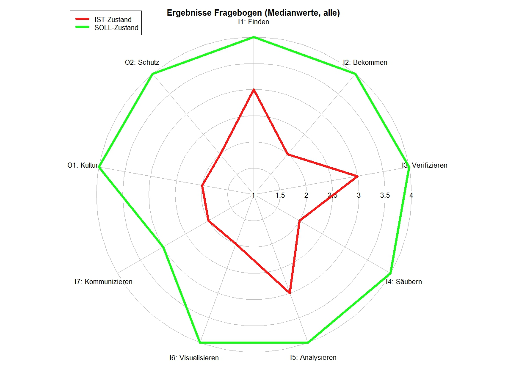
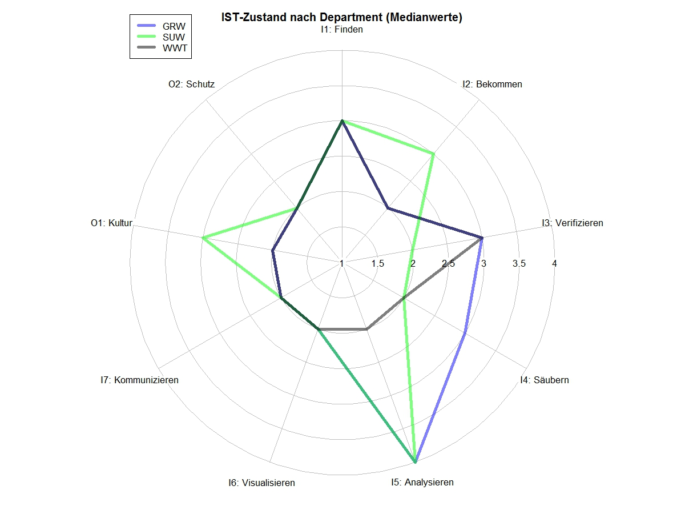
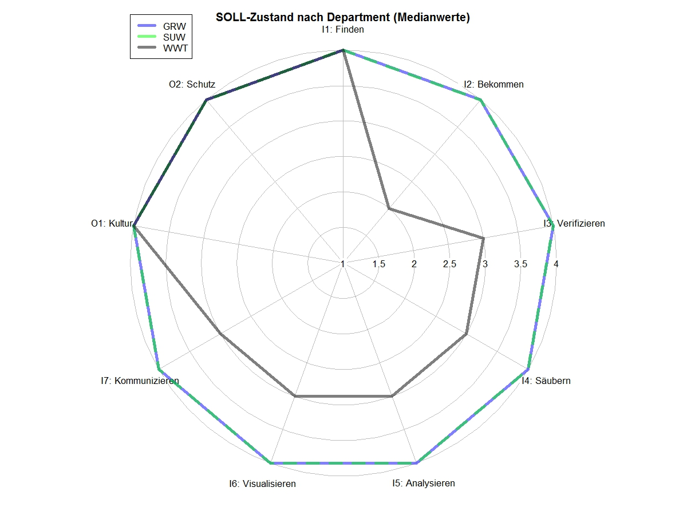
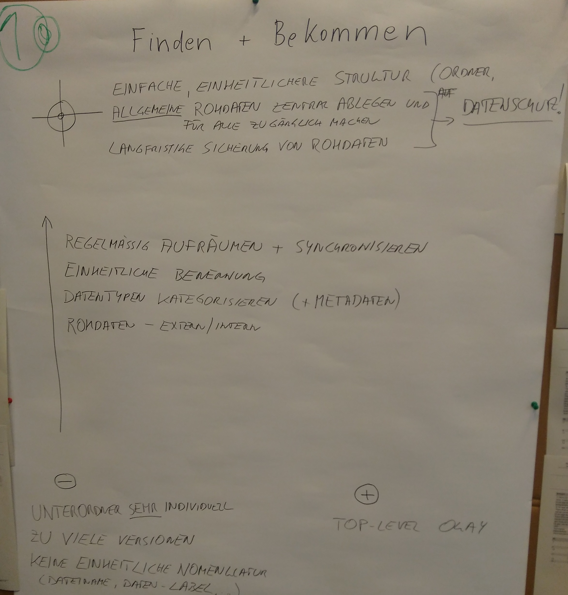
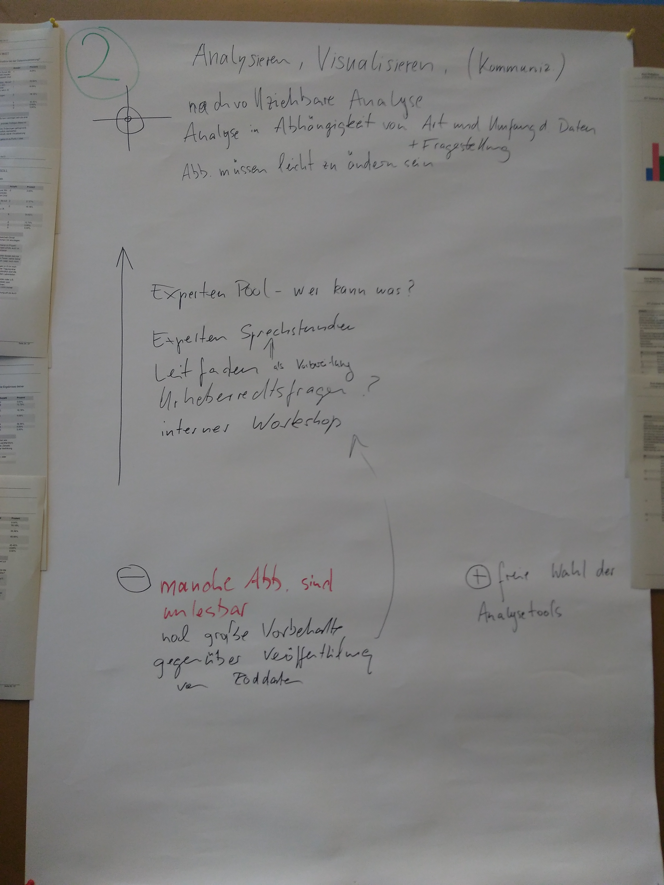
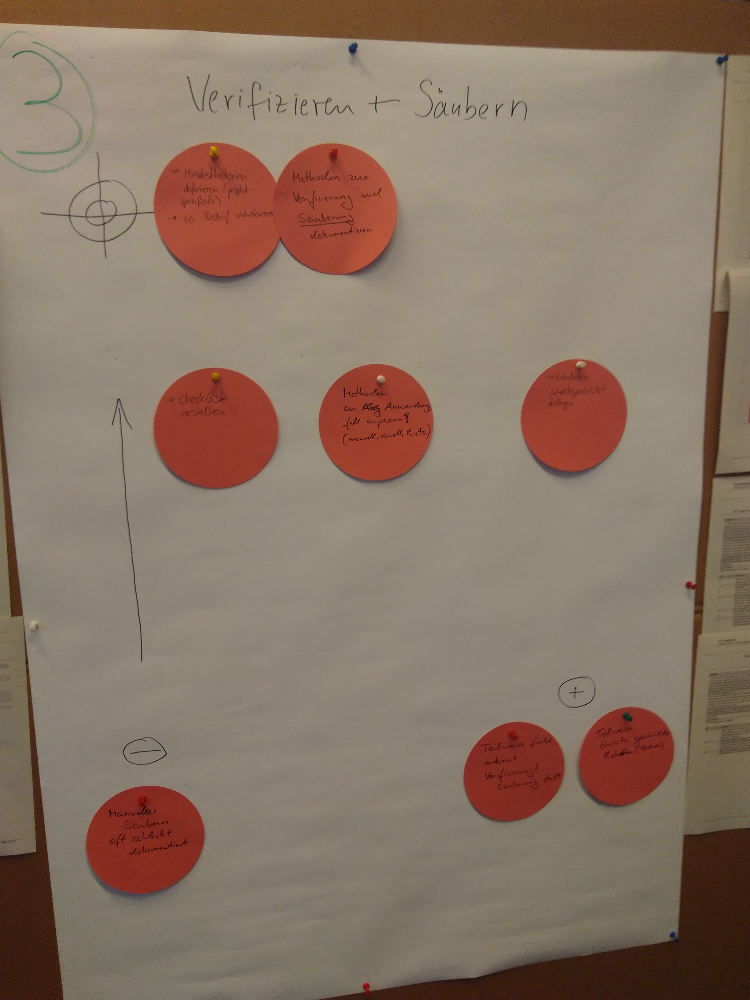

1 IST-/SOLL Zustand
1.1 Gesamt

1.2 Nach Abteilung


2 TOP3-Ergebnisse
1. Platz: Daten finden & bekommen

2. Platz: Daten analyisieren, visualisieren & kommunizieren

3. Platz: Daten verifizieren & säubern

3 Weiteres Vorgehen
In Bearbeitung….